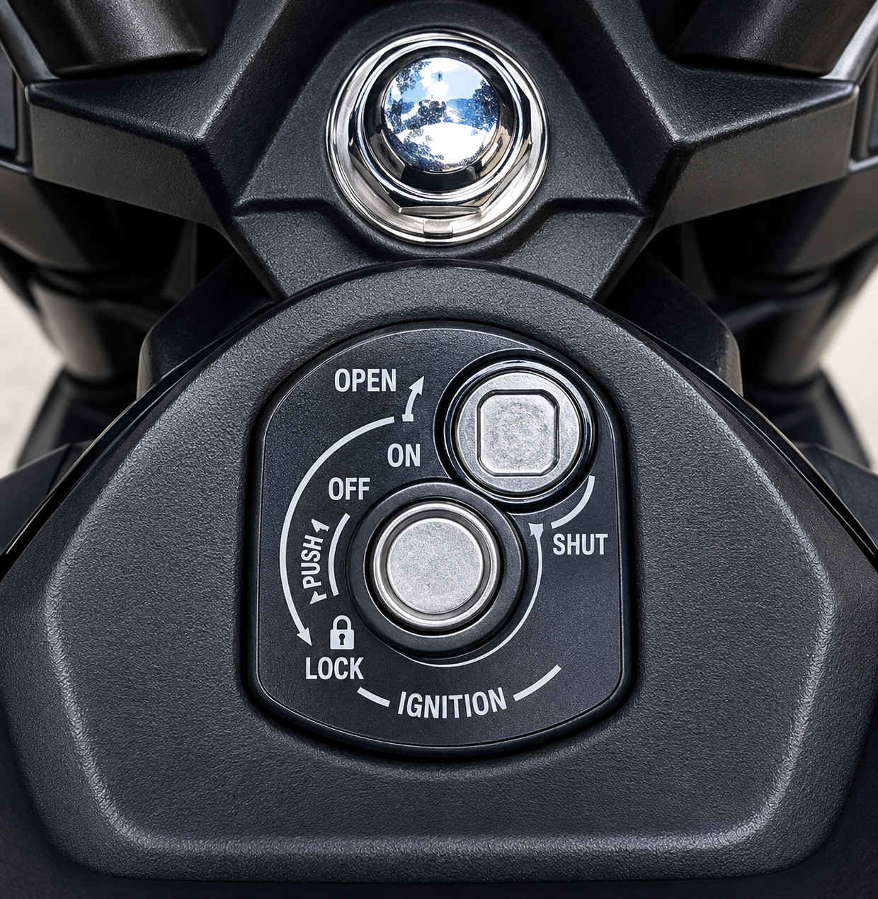

1. Kunci Kontak
1.A. Penjelasan
MAIN SWITCH
Berfungsi mengontrol Sistem Pengapian dan Penerangan, serta mengunci Setang Kemudi.
Unit ini dilengkapi Anak Kunci Utama dan Kunci Pembuka/Penutup Lubang.
1.B. Saran
TIP- Untuk mencegah listrik terkuras, jangan biarkan kunci pada posisi aktif (ON)tanpa menyalakan mesin.
- Jika kemudi tidak dapat terkunci, coba putar sedikit setang kemudi kembali ke arah kanan atau kiri.
- [Vizmind Motorcycle] Penempatan Kunci Pembuka/Penutup Lubang ke posisinya harus tegak lurus agar mencegah terjadinya selek pada permukaan.
1.C. Peringatan
WARNINGJangan pernah memutar kunci kontak ke posisi "OFF" atau "LOCK" saat sepeda motor sedang berjalan. Jika dilakukan, seluruh sistem kelistrikan akan terputus seketika dan setang dapat terkunci, sehingga berisiko menyebabkan hilangnya kendali atau kecelakaan.
2. Lampu Indikator
2.a. Lampu Indikator Sein
TURN SIGNAL(Turn signal indicator lights) Berkedip mengikuti lampu sein kiri atau kanan yang sedang diaktifkan.
2.b. Lampu Indikator Netral
NEUTRAL(Neutral indicator light) Menyala saat posisi transmisi berada di gigi netral.
2.c. Lampu Indikator Lampu Jauh
HIGH BEAM(High beam indicator light) Menyala ketika lampu jauh (high beam) pada lampu utama diaktifkan.
2.d. Lampu Peringatan Suhu Cairan Pendingin
COOLANT TEMP(Coolant temperature warning light) Menyala jika mesin mengalami overheating, sehingga mesin harus segera dimatikan dan dibiarkan dingin. Lampu ini juga menyala selama beberapa detik saat kontak pertama kali diputar ke posisi on sebagai pengecekan fungsi.
2.e. Lampu Peringatan Gangguan Mesin
ENGINE TROUBLE(Engine trouble warning light) Menyala apabila terdeteksi masalah pada mesin atau sistem kontrol kendaraan lainnya. Lampu ini turut menyala sesaat ketika kendaraan baru dihidupkan.
3. Panel Meter Multi-Fungsi
3.a. Speedometer
SPEEDMenampilkan kecepatan laju kendaraan saat berkendara.
3.b. Tachometer
RED ZONE 11K+Memantau putaran mesin (r/min) agar tetap berada di rentang tenaga ideal. Mesin tidak boleh dioperasikan pada zona merah (red zone) yang dimulai dari 11.000 r/min ke atas.
3.c. Meter Bahan Bakar
FUEL METERMenunjukkan sisa volume bensin dari posisi "F" (penuh) menuju "E" (kosong). Segmen terakhir akan berkedip saat sisa bahan bakar mencapai sekitar 1,8 liter sebagai tanda untuk segera mengisi ulang.
3.d. Indikator VVA
VVA SYSTEM(Variable Valve Actuation) Menyala saat sistem katup variabel beralih ke rentang kecepatan tinggi untuk menjaga efisiensi bahan bakar dan akselerasi.
3.e. Indikator Posisi Gigi
GEAR DISPLAYMenampilkan posisi gigi transmisi yang sedang aktif.
3.f. Multi-Function Display
SELECT & RESETDioperasikan menggunakan tombol "SELECT" (untuk mengganti tampilan) dan tombol "RESET" (untuk urutan sebaliknya atau mengatur ulang data) dengan pilihan menu berikut:
3.f.1. Odometer (ODO)
Mencatat total jarak tempuh kendaraan dan akan terkunci di angka 999.999 (tidak dapat di-reset).
3.f.2. Tripmeter (TRIP 1 & TRIP 2)
Mengukur jarak tempuh sejak terakhir kali di-reset, dan akan kembali menghitung dari awal setelah mencapai 9.999,9.
3.f.3. Fuel Reserve Tripmeter (TRIP F)
Muncul otomatis saat segmen bensin terakhir berkedip untuk menghitung jarak tempuh menggunakan bensin cadangan. Mode ini dapat di-reset secara manual atau otomatis hilang setelah mengisi ulang bensin dan menempuh jarak 5 km.
3.f.4. Jam (Clock)
Menggunakan format waktu 12 jam yang diatur melalui kombinasi tombol "SELECT" dan "RESET".
3.f.5. Konsumsi Bahan Bakar Seketika
Menampilkan konsumsi bensin secara real-time dalam satuan "km/L" atau "L/100 km" (menampilkan "_ ." jika kecepatan di bawah 10 km/jam).
3.f.6. Konsumsi Bahan Bakar Rata-rata
Menampilkan rata-rata konsumsi bensin ("AVE_ . km/L" atau "AVE_ . L/100 km") sejak terakhir kali di-reset.
3.f.7. Kecepatan Rata-rata
Menampilkan kecepatan rata-rata perjalanan ("AVE_ . km/h") sejak terakhir kali di-reset.
3.f.8. Pengaturan Kecerahan Layar
Menyediakan tiga tingkat kecerahan layar ("bL-01", "bL-02", atau "bL-03") yang hanya boleh diubah saat motor berhenti total.
4. Kontrol Kemudi, Tuas, & Pedal
4.a. Sakelar Setang Kemudi
HANDLEBARTerdiri dari sakelar setang kiri (mencakup sakelar dimmer/pass dan tombol klakson) serta sakelar setang kanan (mencakup sakelar start/engine stop yang harus berada di posisi run untuk menyalakan mesin).
4.b. Tuas Kopling
CLUTCH LEVERTerletak di setang kiri; tarik ke arah grip untuk memutus kopling dan lepaskan perlahan untuk penyaluran tenaga yang halus. Tuas ini juga dilengkapi clutch switch yang terhubung dengan sistem keamanan starter.
4.c. Pedal Pemindah Gigi
SHIFT PEDALBerada di sisi kiri bawah motor; cungkil ke atas untuk menaikkan gigi dan tekan ke bawah untuk menurunkan gigi.
4.d. Tuas Rem Depan
FRONT BRAKETerletak di stang kanan dan ditarik ke arah selongsong gas (throttle grip) untuk mengaktifkan rem depan.
4.e. Pedal Rem Belakang
REAR BRAKEBerada di sisi kanan bawah motor dan ditekan ke bawah untuk mengaktifkan rem belakang.
5. Fitur Pendukung & Sistem Keamanan
5.a. Tutup Tangki Bahan Bakar
FUEL CAPDibuka dengan mengangkat penutup lubang kunci, memasukkan kunci, lalu memutarnya 1/4 putaran searah jarum jam.
5.b. Bahan Bakar
10.4 LITERPastikan tersedia bensin dalam jumlah yang cukup di dalam tangki. Sebelum mengisi bensin, matikan mesin dan pastikan tidak orang yang duduk di atas sepeda motor. Kapasitas Tangki Bahan Bakar adalah 10.4 Liter.
5.c. Catalytic Converter
EXHAUSTTerpasang pada sistem knalpot untuk mengurangi emisi gas buang berbahaya.
5.d. Jok
SEATDilepas dengan memutar kunci jok searah jarum jam sambil mengangkat bagian belakang jok. Untuk memasangnya kembali, masukkan pengait bagian depan jok kedudukannya lalu tekan bagian belakang hingga terkunci.
5.e. Gantungan Helm
HELMET HOLDERTerletak di balik Jok Pengendara. Jangan Kendarai Sepeda Motor Jika Helm masih tergantung di gantungannya karena helm dapat menabrak objek sehingga mengakibatkan hilang kendali atau bahkan kecelakaan.
5.f. Standar Samping
SIDESTANDTerletak di sisi kiri rangka dan dioperasikan menggunakan kaki saat motor ditahan tegak. Motor dilarang dikendarai saat standar samping masih turun karena berisiko menyentuh jalan dan menyebabkan hilangnya kendali.
5.g. Sistem Pemutus Sirkuit Starter
CUT-OFF SYSTEMMencegah mesin menyala saat transmisi masuk gigi kecuali tuas kopling ditarik. Sistem ini hanya mengizinkan mesin distarter dalam kondisi masuk gigi apabila standar samping sudah dinaikkan dan tuas kopling ditarik penuh.